Kumabe et al. 2025
Proteome profile differences among human, monkey, and mouse brain microvessels and cultured brain microvascular endothelial cells
Kumabe H, Masuda T, Ito S, Furihata T, Toda A, Mogi M, Araki N, Ohtsuki S (2025). Proteome profile differences among human, monkey, and mouse brain microvessels and cultured brain microvascular endothelial cells. Fluids and Barriers of the CNS 22:53. https://doi.org/10.1186/s12987-025-00650-z. Open Access.
| Field | |
|---|---|
| Year | 2025 (published online 30 May 2025) |
| Models | Human, cynomolgus monkey (Macaca fascicularis), mouse (C57BL/6N). Plus cultured cells: MBEC4 (immortalised mouse), hCMEC/D3 and HBMEC/ciβ (immortalised human), primary human BMECs, and HUVEC as a peripheral endothelial comparator |
| Brain region | Not matched between species. Human and monkey: frozen cerebral cortex. Mouse: whole cerebrum. Sub-region and vessel segment not resolved, since microvessels are isolated as a bulk fraction |
| Measures | Protein (primary). RNA secondary, as bulk RNA-seq on cultured cells only, not on brain tissue |
| Method | Brain microvessels (BMVs) isolated from frozen brain. Untargeted DIA LC-MS/MS, library-free search in DIA-NN 1.8.1. QTAP with isotope-labelled standards for SLC43A3. Western blot for enrichment control. Bulk RNA-seq for cultured cells |
| Cross-species stats | Mouse to human orthologues via Alliance of Genome Resources. Mean ± SD; two-tailed Student’s t-test; one-way ANOVA with Tukey post-hoc; Benjamini-Hochberg adjusted p. PCA and hierarchical clustering. GO enrichment (DAVID 2011) |
My reading
The paper is trying to show differences in the blood brain barrier proteome, and specifically differences in vitro against in vivo, using deep proteomic analysis. Most of the work is on brain microvessels and cultured brain microvessel cells, and the cells come in towards the end of the study.
There are a lot of results. Some of them look at the transporters specifically. They look at claudin-5 specifically, at the SLC transporters, and at expression in vivo and in vitro for all three species. Additionally they look at the brain microvessel dataset for all three species. Because of the clustering, monkey and human microvessels are the ones that correlate the most.
Background. They set up from papers they had already looked at and actually wrote themselves, because they seem to be the primary research team on this. Those papers had covered human, monkey, rat and pig, and species differences in the blood brain barrier amongst human and monkey. Their approach is protein expression profiling using QTAP, quantitative targeted absolute proteomics, applied to in vivo protein expression in brain microvessels. They also use immortalised cells. They explain where the cells came from, mainly real brains, how they froze them and isolated the brain microvascular cells, and the isolation of microvessels from frozen brain for all three species.
Methods. Protein concentration measured with the bicinchoninic acid (BCA) protein assay kit. I have used that one myself in my own study. Then cell culture, how the cells were grown and what was used. Then cell sample preparation for proteomic analysis, which I read but not in full depth. Then the crude membrane fraction for proteome analysis. Then Western blot analysis, which I did not really understand.
Then the quantitative proteomic analysis: trypsin digestion with the PTS method for mouse, human and cultured cells, analysed by DIA and mass spectrometry. The monkey and mouse microvessel samples were analysed on a Dionex Ultimate system. Proteins were identified using the library-free search function in DIA-NN.
For the monkey samples they compared against the human proteome, because there is not enough monkey data. They then normalised their quantitative values using the formula on p4, which is the normalisation of the protein expression values they obtained.
Mouse genes were converted into the corresponding human genes using Alliance of Genome Resources as orthologues, but I noted that the orthologues they have are not one to one. There are multiple.
Then the transporters: QTAP for SLC43A3. Then RNA sequencing, where they quantified mRNA concentration, though I am not certain exactly what for.
Statistics. Mean and standard deviation. A two-tailed Student’s t-test in Microsoft Excel. Multiple groups compared using one-way ANOVA, and I know what ANOVA is, comparing multiple averages, but not specifically one-way. That was followed by Tukey post-hoc tests. Because they have multiple p-values, these were adjusted with the Benjamini-Hochberg method, which they refer to as the adjusted p-value. Separately, GO enrichment analysis using DAVID 2011.
Results, isolation. They isolated microvessels from frozen cerebrum and cerebral cortices, and used Western blotting to evaluate microvessel enrichment in the isolated fractions. Claudin-5 was detected in the microvessel fractions of all species. PSD95, a neuronal marker, was detected in the brain lysates of all species but not in the microvessel fraction. From that they conclude the microvessels were enriched in the isolated fractions, and that proteomic analysis could be conducted with similar enrichment across biological replicates of all species. So they are also showing that their method is reproducible, and this is why it is a strong method.
Results, proteomic analysis of isolated microvessels. DIA proteomics. They state that the monkey proteome database is incomplete, and important proteins could not be found. What they did find is that the number of identified proteins in the microvessel fractions and brain lysates was not significantly different between data analysed with the monkey and the human reference proteome databases, which is a good case for them given the incomplete monkey data. The quantified values also significantly correlate between the monkey and human reference databases, and they argue this from the p-value.
Results, cultured cells. Proteomic and RNA-seq analysis. In all samples the number of identified genes was greater than the number of proteins. This section is specifically their argumentation that the method and quantification are reproducible and strong.
Results, comparing the three species. They identify around 12,000 orthologous proteins, and almost 7,000 proteins identified in all three species, which is a huge chunk. They discuss possible contamination of the fractions, but according to the p-value this should not have had a large impact on the data. Then clustering and PCA for the proteome profile of the microvessel fractions in all three species.
Results, transport-related proteins. Species differences in transport-related protein expression in microvessels, using QTAP to assess the reproducibility of the multi-species proteome data. So again, checking that the method is sound.
Then several pages of graphs. I marked a lot here, but in general the paragraphs after p10 all go back to the method being reproducible, plus the point that some transport-related proteins are more expressed in the enriched microvessel fractions than in brain lysates, with p-values for some of those. This section was incredibly hard to read.
Results, in vivo against in vitro. Comparing the proteome profile between microvessel fractions and cultured cells, again using PCA and clustering. Primary cultured human cells had the closest profile to the human microvessel fraction.
Results, claudins (p11). Differences between in vitro and in vivo: in vivo, expression levels were higher in the brain microvessel fractions. And per subtype of the claudin family there were different expression levels between microvessels, cultured cells and the cell lines.
Discussion. They argue that their deep proteomic profile of microvessel fractions from isolated human, monkey and mouse brain, together with the profile of cultured BBB model cells, provides a good starting point for future research to build on. They discuss which proteins were identified and how reproducible the data are.
Notes past p13 (printer cut off, so these are from reading rather than annotation):
- Blood removal is not statistically significant for the species differences of microvessel-enriched proteins.
- There is high transport-related protein correlation between human and monkey.
- The transporters the study focused on: SLC43A3, SLC22A6 and SLCO, in all three species and their respective microvessel fractions.
- The in vivo and in vitro comparison revealed differences in the expression levels of transporters involved in the transport of amino acids and DHA, and the same goes for the claudin family.
What I take from it
Reading it through, a large part of this paper is the authors arguing that their method is reproducible and robust, rather than reporting biology. The enrichment check, the monkey versus human database comparison, the gene count versus protein count comparison, the QTAP re-measurement: each of these sections exists to defend the data, and they recur after almost every result. The biological findings sit inside that scaffolding rather than driving the paper.
That is not a criticism. For a multi-species proteomics dataset intended as a reference resource, the method validation is the contribution, and it is the part of this paper that is most worth borrowing.
The background reads the same way. They set up mostly from their own earlier papers, which makes sense if they are the primary group working on this, but it does mean the framing of the problem and the standard the method is judged against both come from the same lab.
Open questions from this read
- What does a Western blot actually do, and why is it the right check here? (answered in the glossary)
- What is “one-way” ANOVA, as opposed to other kinds? (glossary)
- What is a Tukey post-hoc test for? (glossary)
- What does “immortalised” mean for a cell line, and what does it cost you? (glossary)
- The cell sample preparation and crude membrane sections: read, but not in depth. Worth returning to if the method is ever borrowed.
- The RNA sequencing: what exactly was it for, and on which samples? (cultured cells only, not brain tissue, confirmed against the paper)
- The transport-related results after p10 were hard to read. Worth a second pass.
How it relates to this project
Independent, non-sequence support for the macaque result. This project’s clearest surviving finding is that macaque coding sequence sits closer to human than mouse does. Kumabe reaches the same ordering from a completely different measurement, protein expression in isolated microvessels. Two modalities agreeing is worth more than either alone. They remain different claims: conservation of sequence versus similarity of expression.
It is a primate BBB dataset, which this project does not have. The audit records that there is no macaque expression evidence at all. Every gene earned its place from a mouse study, and the paper logged as the macaque dataset contained no macaque samples. Kumabe supplies that missing layer, at protein level.
Caveat before using it: this is cynomolgus macaque (Macaca fascicularis). This project’s macaque genome is rhesus (Macaca mulatta, Mmul_10). Different species. Close, but not interchangeable without saying so.
The brain region field earned its place immediately. Human and monkey samples are cerebral cortex; mouse is whole cerebrum. Any mouse versus primate difference here is partly confounded with region. The authors are open about their other confounders too, including a longer post-mortem interval in the human samples and perfusion in mice only, and they test the blood contamination one directly.
The same orthologue problem, named out loud. The observation about orthologues not being one to one is exactly this project’s problem: one-to-many pairs at 25.8% identity entering the BBB set in
step3b, andstep5dthen applying different orthologue rules to the BBB and control sets.A better human validation set than the one currently used.
step4bvalidates the gene list against a single arterial marker sheet. Kumabe’s microvessel-enriched protein lists are a defined, thresholded, protein-level alternative, and they exist for a primate as well as for human.
Reference detail from the paper
Numbers to cite from, checked against the text.
- Depth: 7,149 to 8,274 proteins per microvessel fraction; 6,657 to 7,534 in whole-brain lysate.
- Orthologues: 12,272 orthologous proteins total; 6,845 identified in all three species.
- Microvessel-enriched (log₂ BMV/brain > 2.5, adjusted p < 0.05): 1,636 mouse, 1,166 monkey, 2,155 human; 528 shared across all three.
- Monkey database validation: protein intensities from the monkey and human reference databases correlate at r = 0.888 (p < 0.0001); 75.6% of proteins within 1.5-fold. Human to monkey genomic difference taken as about 4%.
- Species differences in transporters: ABCB1/Abcb1a higher in mouse (human/mouse ratio 0.344); ABCG2/Abcg2 2.57-fold higher in monkey than human; SLC22A8/Slc22a8 and SLC22A6/Slc22a6 detected in mouse only; SLCO1A2 quantified in human where mouse expresses Slco1a4 and Slco1c1; SLC43A3/Slc43a3 is primate-specific, present in human and monkey microvessels, absent in mouse, confirmed by QTAP at 22.4-fold higher in hCMEC/D3 than MBEC4.
- In vitro against in vivo: ABCC1 11.3-fold and SLC29A1 1.54-fold higher in hCMEC/D3 than in microvessels; SLC7A5 5.79-fold higher in microvessels; claudin-5 not detected at all in hCMEC/D3. Immortalised lines clustered closer to HUVEC than to primary cells. MFSD2A absent from cultured cells entirely.
- Claudins: total claudin family expression higher in microvessels in vivo; claudin-5 highest in microvessels, claudin-11 high in most cell lines, claudin-12 the major subtype in MBEC4.
Annotated scan
These are my own printed and annotated pages, scanned back in. The printer cut off after page 13, so the annotations stop there; the notes for the remaining pages are written out at the end of My reading above.
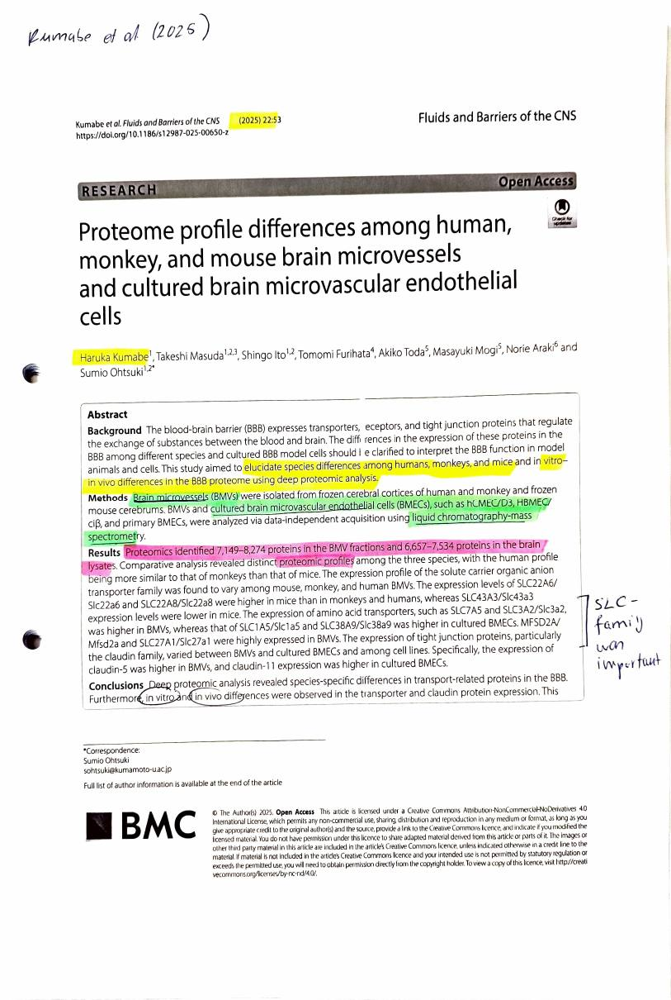
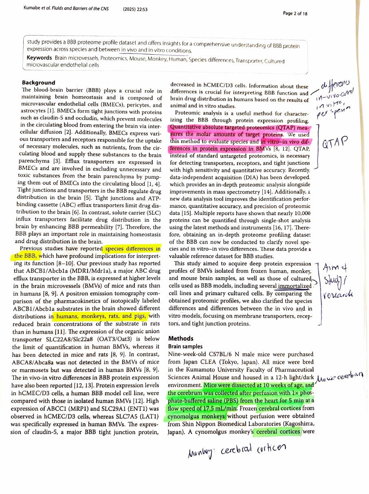
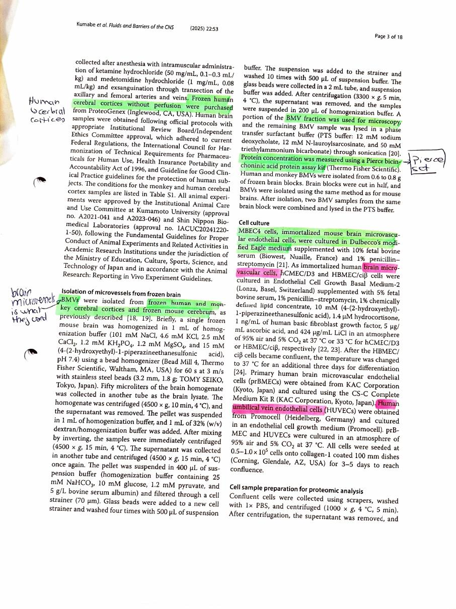
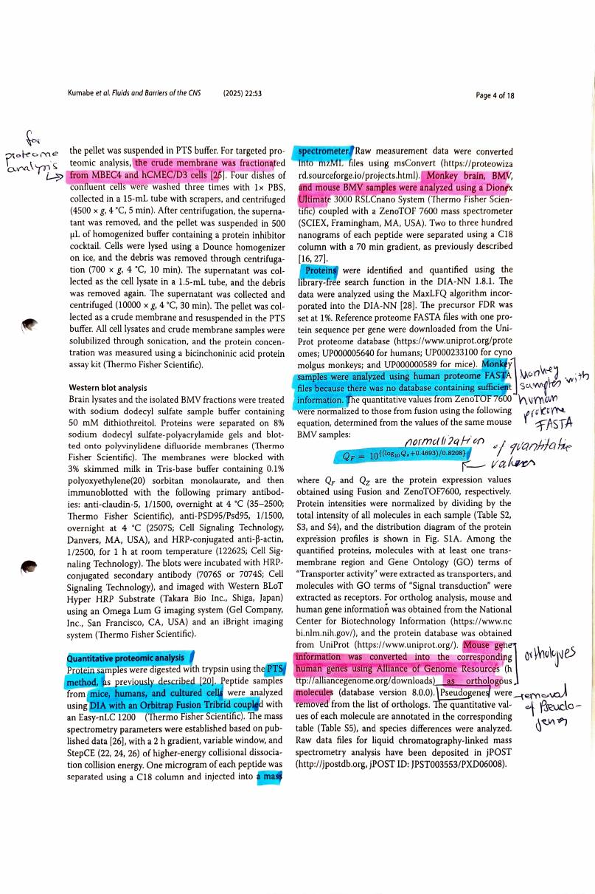
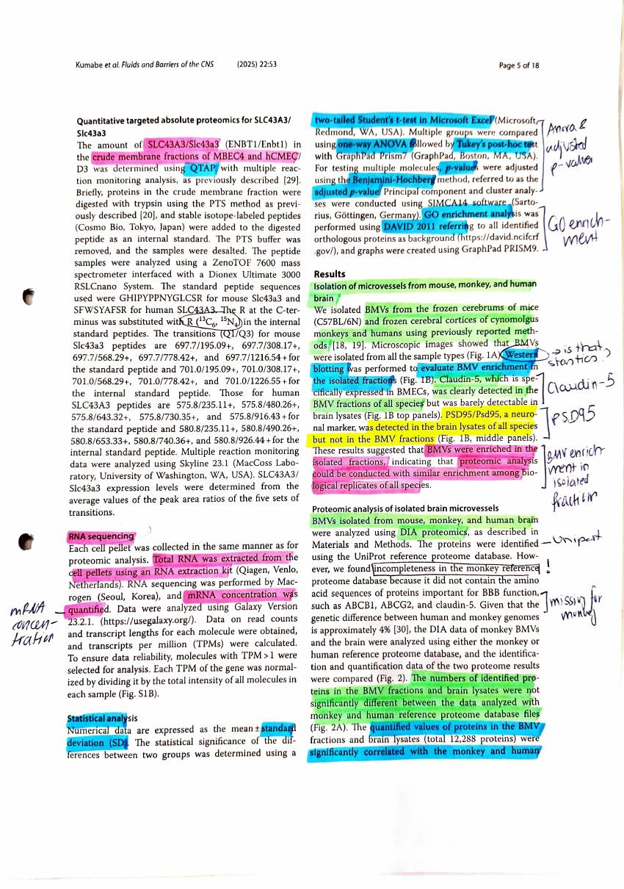
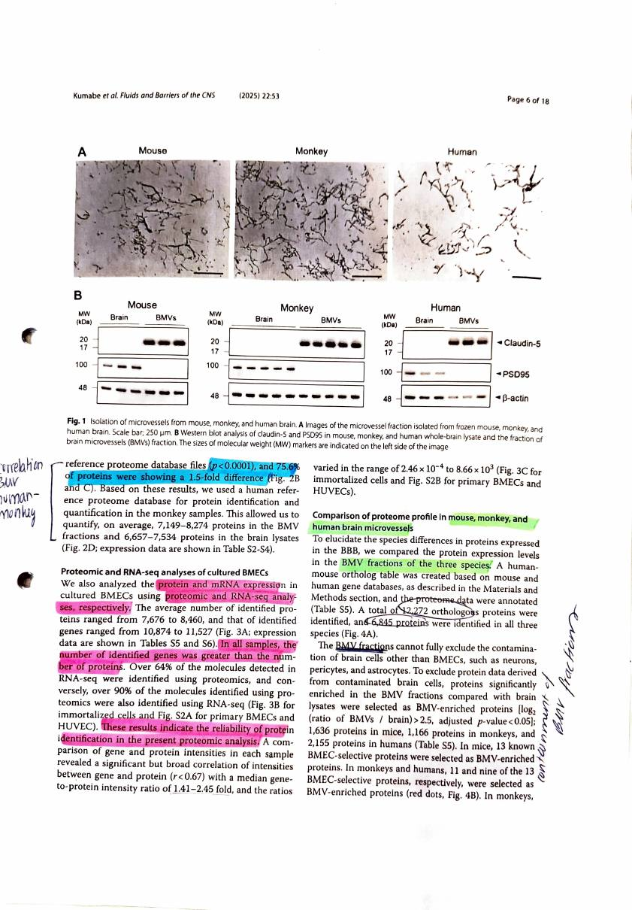
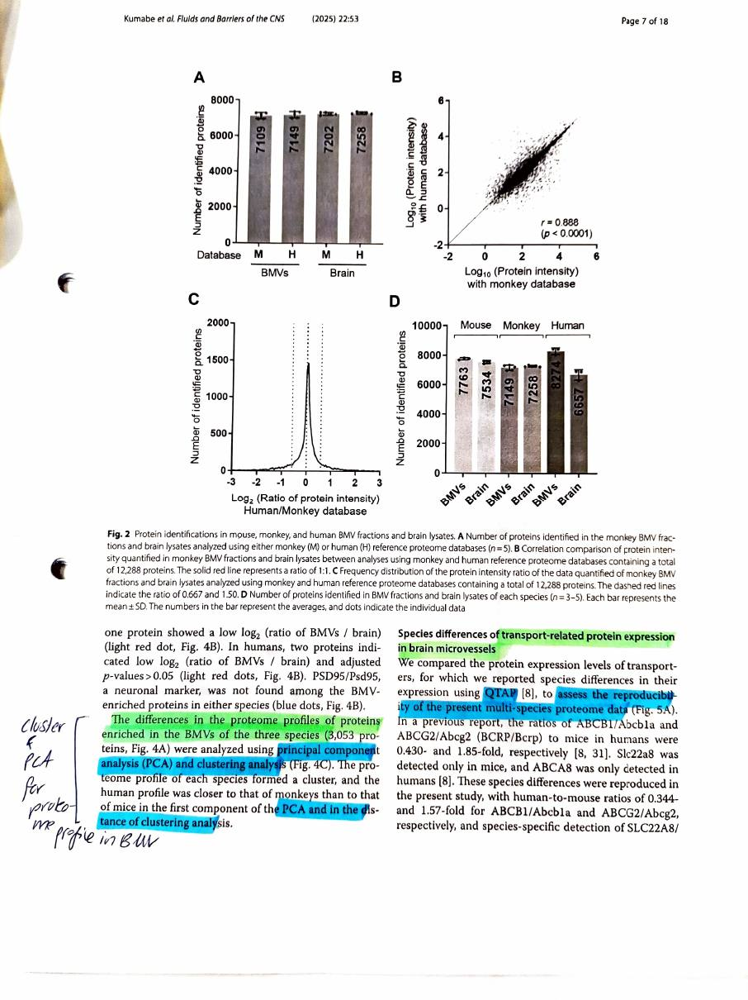
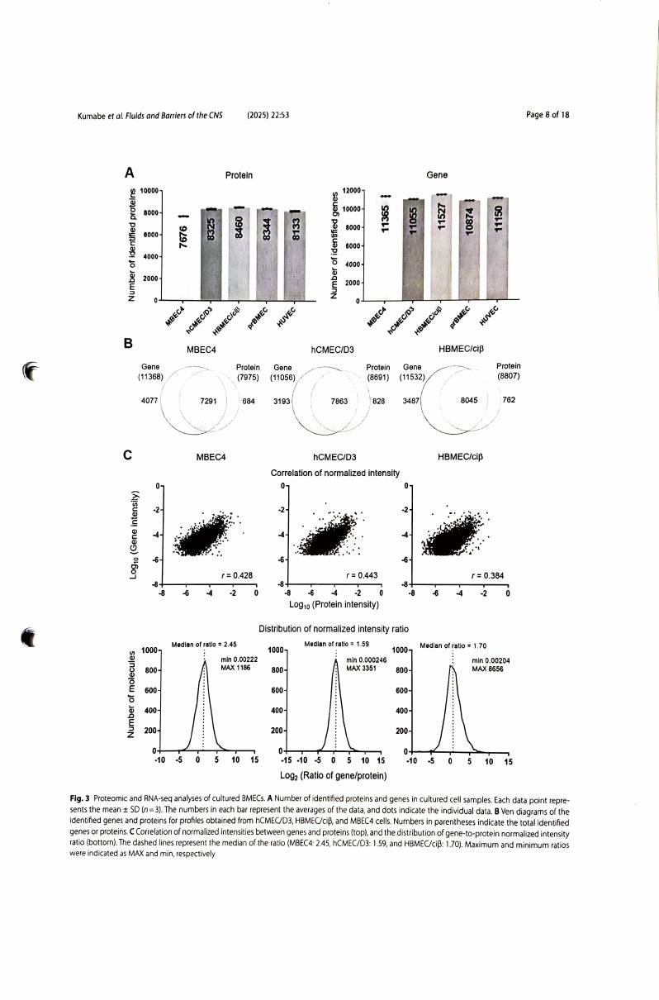
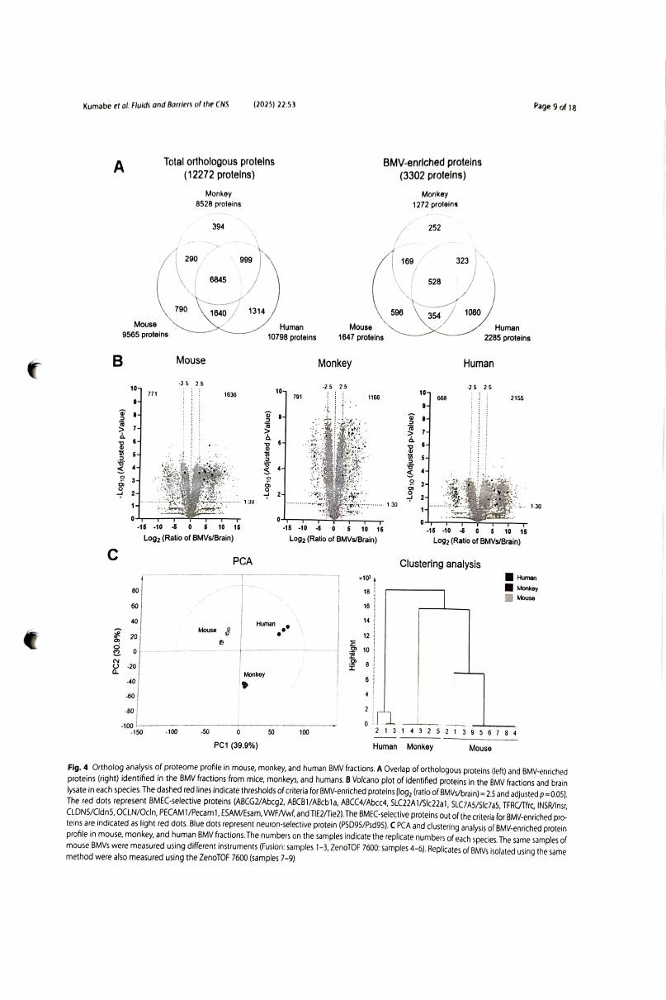
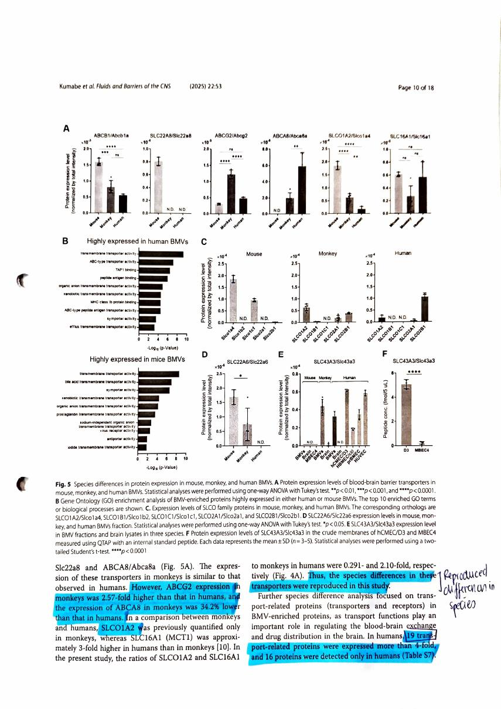
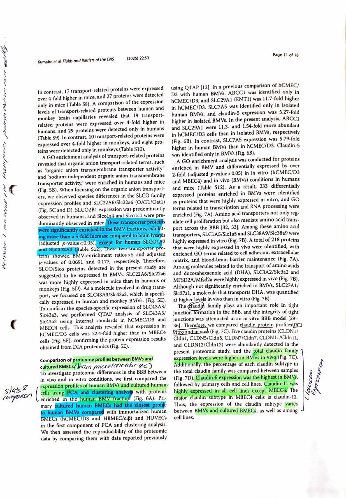
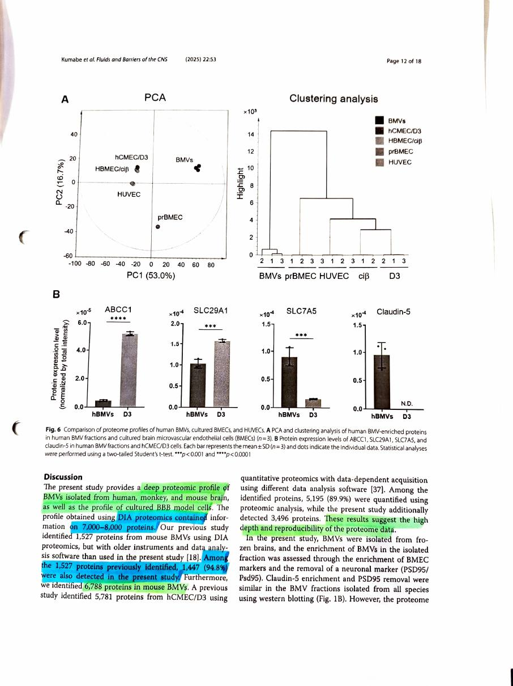
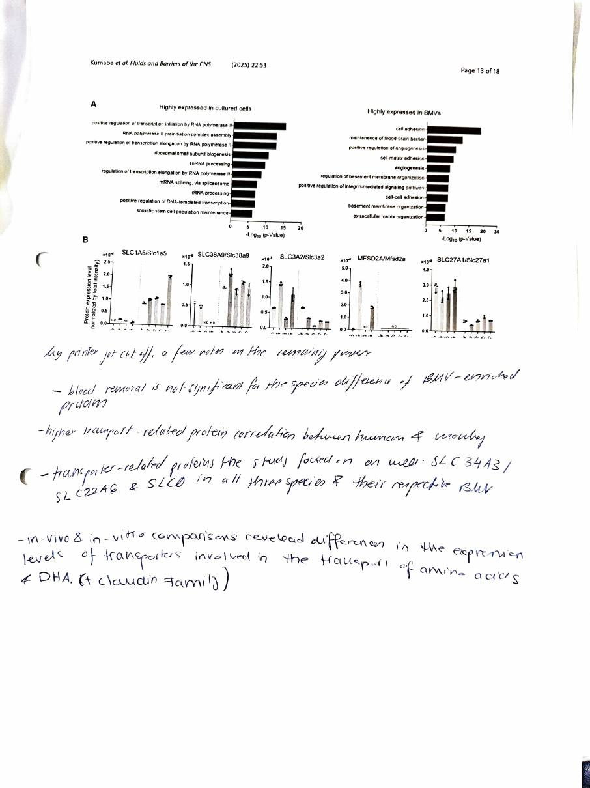
Pages reproduced from Kumabe et al. 2025, Fluids and Barriers of the CNS 22:53, open access under CC BY-NC-ND 4.0. Handwriting and highlighting are mine. Original paper.